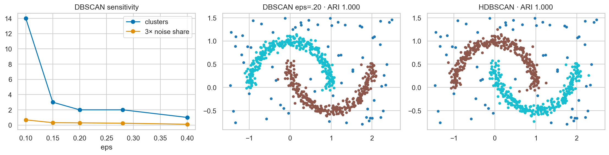

ML Hands-on Lab · 06 — Geometric and density-based
DBSCAN and HDBSCAN
DBSCAN forms clusters by connecting dense neighborhoods and leaves isolated points as noise. HDBSCAN searches a hierarchy of density levels instead of committing to one global neighborhood radius.
Read this page independently, then run the notebook cells in order. The figure below is a preserved historical notebook output; no model training was rerun for this editorial revision.
1. The experiment and its boundary
The first simulation contains 600 noisy two-moon points and 90 uniformly placed background points. Standardization is fitted to this entire analysis cloud, then DBSCAN is run at five radii from .10 to .40. HDBSCAN provides a comparison using the same scaled points.
This is transductive clustering: the task is to group the observed cloud. There is no supervised train/test split or classifier score for new samples. The simulation’s true moon identities are hidden from the clustering algorithms and used only afterward to inspect recovery.
2. The mechanism
A point is core if its ε-neighborhood contains at least min_samples points, including itself. Connected core neighborhoods expand a cluster. A reachable non-core point can be a border point; a point unreachable from any core is labeled −1.
Nε(x) = {points within distance ε of x}
core if |Nε(x)| ≥ min_samples
cluster = connected dense neighborhoods + attached borders
HDBSCAN varies density scale, builds a hierarchy, and selects persistent groups. Its min_cluster_size filters tiny groups, while min_samples affects density conservatism. It can handle the unequal-density example more flexibly, but does not make arbitrary data intrinsically clusterable.
3. Work through a tiny example
Place five points at 0, .1, .2, .3, .4 on a line. Set ε=.11 and min_samples=3. The middle points have themselves plus two neighbors and are core. Their neighborhoods overlap, so all five points form one cluster, including the two border endpoints.
The endpoints are .4 apart—farther than ε. DBSCAN does not require every pair in a cluster to be close; it requires a chain of dense connectivity. Add an isolated point at 2 and it becomes noise.
4. Settings that change this experiment
| Notebook setting | What it changes |
|---|---|
| eps: .10, .15, .20, .28, .40 | Small radii fragment moons and reject more points; large radii can connect the two shapes into one group. |
| DBSCAN min_samples=6 | Higher values demand denser support and may reject thin valid structures as noise. |
| HDBSCAN min_cluster_size=35, min_samples=6 | The first constrains retained group size; the second influences core-distance/density estimates. They are not interchangeable. |
5. The actual notebook operation
These are the actual core operations from the matching notebook, reformatted for readability. They use the data, imports and variables defined in earlier cells; open the notebook to execute the complete experiment.
Notebook cell 10 · counting all cells from 1
Xs = StandardScaler().fit_transform(X)
eps_values = [0.1, 0.15, 0.2, 0.28, 0.4]
models = {e: DBSCAN(eps=e, min_samples=6).fit(Xs) for e in eps_values}
print('Scaled shape:', Xs.shape)Notebook cell 12 · counting all cells from 1
for (e, m) in models.items():
print(f'eps={e:.2f}: clusters={len(set(m.labels_) - {-1})}, noise={(m.labels_ == -1).mean():.1%}')
hdb = hdbscan.HDBSCAN(min_cluster_size=35, min_samples=6).fit(Xs)
model = models[0.2]
print('HDBSCAN clusters:', len(set(hdb.labels_) - {-1}), 'noise:', round(np.mean(hdb.labels_ == -1), 3))6. Baseline and what the metrics mean
Adjusted Rand index (ARI) compares pairwise co-membership while correcting for chance. Its chance reference is approximately 0; perfect partition agreement is 1, regardless of the numeric names given to groups. On the moons, the notebook calculates ARI only on the 600 planted moon points, excluding injected background points from the scoring mask.
Therefore an ARI of 1 does not establish perfect noise detection. Also inspect the noise fraction and where rejected/absorbed background points lie. A silhouette score alone would not settle whether curved shapes were recovered.
7. Read the historical figure

- Left: cluster count changes sharply with eps. The orange curve is three times the noise fraction, scaled for plotting; it is not a second cluster count.
- Middle/right: the historical DBSCAN and HDBSCAN plots each show ARI 1.000 for the planted moons. The excluded background points still require separate inspection.
- The exploratory k-neighbor-distance curve in the notebook uses raw coordinates, while eps is later applied to standardized coordinates. Recompute that curve after scaling before using its bend to set a numerical eps.
8. Break the assumption
The second simulation contains one 250-point compact Gaussian blob with standard deviation .18 and one 250-point diffuse blob with standard deviation .85. DBSCAN is tried at .12, .25 and .45; HDBSCAN is also fitted. A radius that connects the diffuse population may blur separation elsewhere, while a radius suitable for the compact population can reject much of the diffuse one.
Compare both partition recovery and noise behavior. Do not read this designed example as a guarantee that HDBSCAN beats DBSCAN on all datasets or that its selected groups have business meaning.
9. Exercises with a decision to explain
- Sweep min_samples and report both cluster count and noise fraction. Explain which observations change from core to border or noise.
- Add 20 irrelevant numeric dimensions, rescale, and inspect neighbor-distance concentration before retuning eps.
- Evaluate background-noise precision/recall separately from moon ARI, then inspect HDBSCAN membership strengths near boundaries.
10. Run and inspect
Change one assumption at a time, keep the appropriate evaluation boundary, and compare the actual results. A baseline win or an inconclusive result is useful evidence.